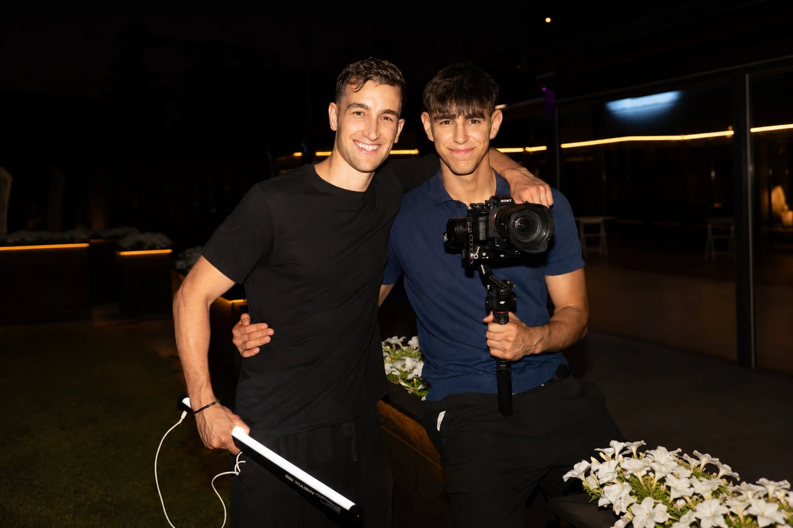

El 12 de julio de 2024, los hermanos Roger y Esteve se dieron de alta como autónomos y Mediatic empezó oficialmente su andadura. Dos años después, la agencia trabaja con más de 30 clientes de forma recurrente, cuenta con un equipo de más de ocho personas y suma más de 300 millones de reproducciones orgánicas para sus clientes.
En este artículo repasamos cómo nació Mediatic, cómo ha crecido en estos dos años y hacia dónde quiere ir.

Foto: Alba Vitta
Dos hermanos con un proyecto en común
Roger y Esteve siempre habían querido emprender juntos. No sabían en qué, hasta que se presentó la oportunidad.
Cuando nació Mediatic, Roger estaba terminando el máster en Ingeniería de Minas, después de compaginar el grado con distintos trabajos. Esteve, por su parte, cursaba el primer año de Ingeniería Mecánica. Fue él quien dio el primer paso: había empezado a desarrollar una idea similar con un buen amigo (Jan Bastardas) y, en un momento dado, le propuso a su hermano hacerlo juntos. Roger aceptó.
Un verano regalando vídeos en Manresa
Los inicios de Mediatic tienen una historia curiosa. Para darse a conocer, Roger y Esteve dedicaron todo un verano a ofrecer vídeos gratuitos a negocios de Manresa. Llegaron a más de 50.
Muchos negocios ni siquiera llegaron a publicar el vídeo. Algunos incluso les dijeron que no lo querían, y aun así se lo regalaron. El objetivo era otro: generar contactos, hacerse conocidos y demostrar lo que sabían hacer. Funcionó. De aquel verano salieron los primeros clientes de la agencia.
Ser un 10 en una sola cosa
Antes de Mediatic hubo un primer intento. En febrero de 2024, Roger y Esteve lanzaron un servicio de *growth partner* llamado Growing Events, que abarcaba muchas áreas del marketing. El proyecto nunca llegó a arrancar: grabaron algunos vídeos para darse a conocer y contactaron con varias marcas, pero no llegaron a facturar.
Aquella experiencia les dejó una lección clara: preferían ser un 10 en una sola cosa antes que un 7 en muchas. Con esa idea nació Mediatic el 12 de julio de 2024, como una agencia especializada exclusivamente en contenido para redes sociales, sin webs ni anuncios. Esa especialización es, todavía hoy, una de las claves de sus resultados.
Dos años de crecimiento en cifras
En estos dos años, Mediatic ha pasado de sus primeros clientes en Manresa a trabajar con más de 30 clientes de forma recurrente. Juntos suman más de 300 millones de reproducciones orgánicas, y algunos vídeos han llegado a aportar más de 20.000 seguidores a un cliente por sí solos.
El crecimiento del equipo es especialmente significativo. Hace apenas un año, Roger y Esteve trabajaban solos. Hoy forman un equipo de más de ocho personas, al que también se ha sumado su madre. Su ponencia en el Gamma PMU Congress es una muestra de hasta dónde ha llegado el proyecto.
Detrás de cada cifra hay negocios reales. Uno de ellos es De Profundis, una tienda de buceo técnico que ha pasado de ser un escaparate en Instagram a recibir clientes cada día gracias a sus vídeos. Otro, un chef que en solo un mes y con 12 vídeos pasó de 45.000 a más de 120.000 seguidores.
Los sectores también se han multiplicado: cocina, buceo técnico, deporte, marketing digital, marcas personales, micropigmentación, estética o clínicas dentales, entre otros.
Lo que hace diferente a Mediatic
Más allá de los resultados, hay algo que Roger y Esteve destacan por encima de todo: la forma de trabajar.
«Puede sonar genérico, pero siempre trabajamos desde la bondad y el buen ambiente, tanto con los clientes como con el equipo. Y lo que más me enorgullece es escuchar cómo hablan de nosotros nuestros clientes.»
Roger, cofundador de Mediatic
Ese orgullo tiene una base sólida. Algunos clientes trabajan con Mediatic desde el primer momento, algo que para Roger y Esteve tiene una doble lectura: están a gusto y, además, el contenido les genera negocio. Sin lo segundo, lo primero no bastaría. Los propios clientes lo cuentan en primera persona en las opiniones de la web y en la serie de entrevistas de Mediatic en YouTube.
Mucho más que una agencia
Para Roger y Esteve, el mayor logro de estos dos años no aparece en ninguna tabla.
«Hay muchos momentos que han marcado un antes y un después, pero me quedo con el hecho de construir algo junto a mi hermano, y ahora también con nuestra madre. Esto es un trabajo y un proyecto, pero también nos está haciendo crecer como personas y vivir experiencias muy bonitas en familia.»
Roger, cofundador de Mediatic
El tercer año: crecer sin perder la esencia
El objetivo para el tercer año es claro: seguir creciendo al ritmo actual, pero de forma sostenida, orgánica y estable.
«No queremos crecer a toda costa. Preferimos hacerlo de forma correcta y estable, sin que más clientes signifique dar un peor servicio a quienes ya confían en nosotros.»
Esteve, cofundador de Mediatic
Es la misma filosofía con la que empezaron regalando vídeos en Manresa: hacer bien el trabajo y dejar que los resultados hablen.
Gracias
Mediatic quiere dar las gracias a todos los clientes que han confiado en la agencia durante estos dos años, en especial a los que lo hicieron desde el principio, y a todo el equipo que lo hace posible cada día.
Si quieres que tu negocio forme parte de los próximos años de Mediatic, conoce sus servicios de contenido para empresas o contacta con el equipo.
Preguntas frecuentes
¿Quién fundó Mediatic y cuándo?
Mediatic fue fundada por los hermanos Roger y Esteve. El proyecto arrancó en febrero de 2024 y se constituyó oficialmente el 12 de julio de 2024. Desde entonces, la agencia se ha especializado exclusivamente en la creación de contenido para redes sociales.
¿Qué hace Mediatic?
Mediatic es una agencia especializada exclusivamente en contenido para redes sociales. Se encarga de todo el proceso: estrategia, ideas, guiones, grabación, edición, publicación y análisis de resultados. Trabaja con más de 30 clientes de forma recurrente y suma más de 300 millones de reproducciones orgánicas.
¿Con qué sectores trabaja Mediatic?
Mediatic trabaja con negocios de sectores muy variados, como la cocina, el buceo técnico, el deporte, el marketing digital, las marcas personales, la micropigmentación, la estética o las clínicas dentales. En todos ellos aplica la misma especialización: contenido estratégico para redes sociales.